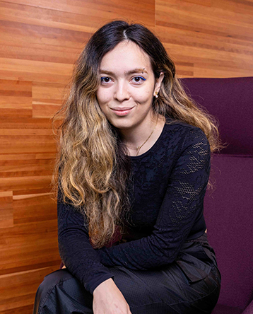
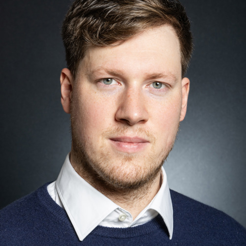
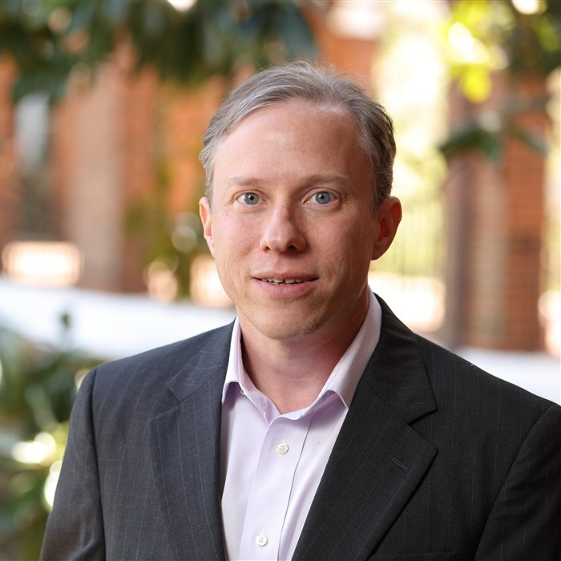
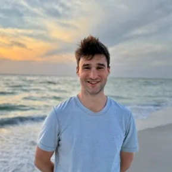
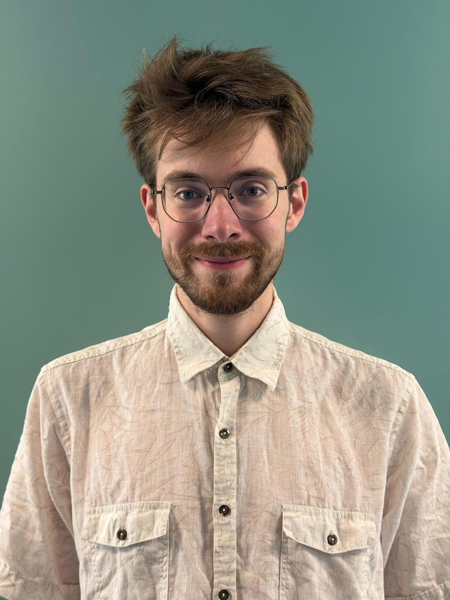
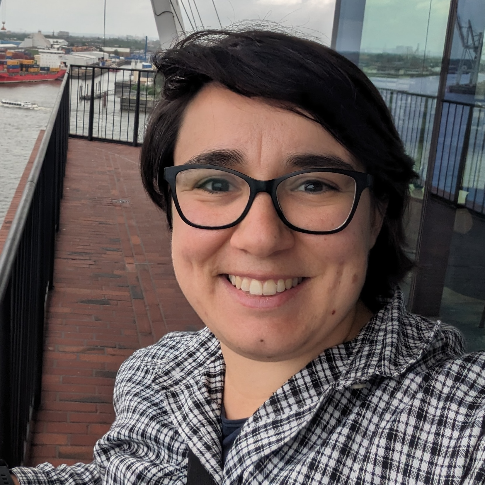
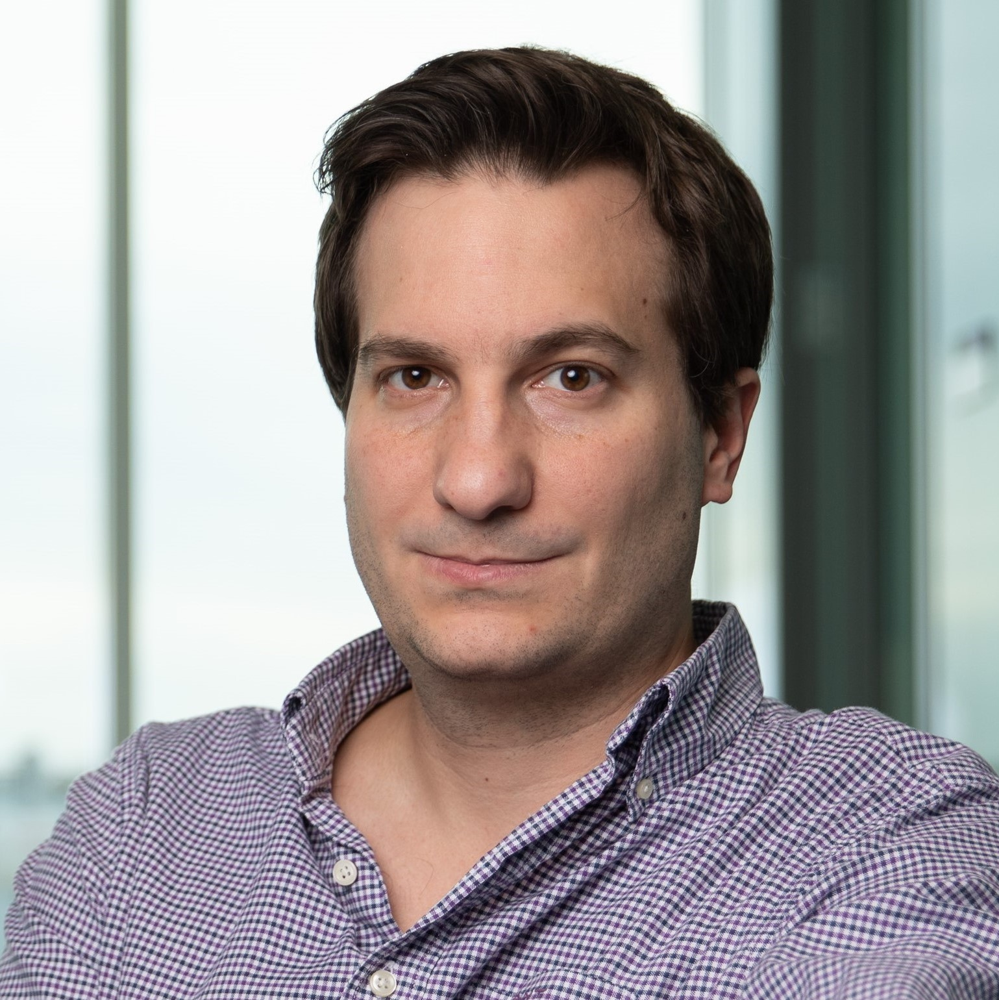
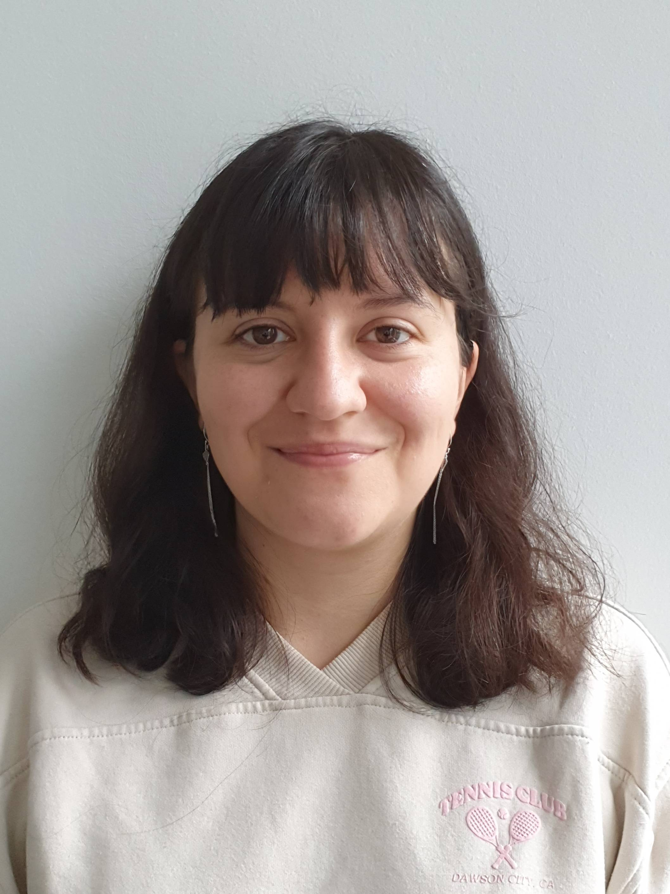

Formalizing LLM Security
How should LLM security be formalized? Is there an agreed-upon framework comparable to the notion of differential privacy in privacy research? What role should theory play in creating secure LLM systems?
This workshop aims to advance research on secure-by-design LLM systems by shifting away from the current cat-and-mouse game of attacks and defenses toward a principled understanding of why security vulnerabilities arise and how to address them from the ground up. LLMs have been shown to be vulnerable to a range of attacks such as prompt injections and data poisoning, and yet continue to be deployed in complex systems without a clear understanding of why these vulnerabilities arise or how they interconnect with classical security vulnerabilities.
At the model level, the absence of a hard separation between instructions and data may expose fundamental attack surfaces; at the system level, confused-deputy patterns and missing trust boundaries introduce further structural weaknesses. Understanding whether these vulnerabilities are inherent to current language modeling architectures or artifacts of specific design choices is essential for moving from brittle empirical defenses toward principled security.
Recent research advocates treating LLM security as a system design problem, with a few approaches achieving provable security in specific settings. However, the field still lacks shared formal definitions of what LLM security means, comparable to differential privacy for privacy guarantees, and securing systems by design remains a use-case-specific engineering effort rather than an application of generic principles.
Moreover, existing solutions that offer security guarantees tend to degrade the utility of the system, and it is unclear whether this trade-off is an artifact of current approaches or a more fundamental limit of any LLM system that achieves meaningful security. This workshop aims to consolidate existing knowledge and lay the foundations for future LLM security research by answering three questions:
How should LLM security be formalized? Is there an agreed-upon framework comparable to the notion of differential privacy in privacy research? What role should theory play in creating secure LLM systems?
Can we design evaluation methodologies that are reproducible and generalizable rather than fragile and hackable? What concrete steps can help avoid unproductive cycles of attacks and defenses?
Existing approaches to securing LLM-based systems trade off security for utility. Is this trade-off an artifact of current defense designs, or a more fundamental property that any secure system must exhibit? In which settings has provable security already been achieved, and are there impossibility results establishing conditions under which security cannot be attained?
The workshop will consist of five thematic keynote blocks. Each block will consist of a 45-minute expert keynote followed by a 30-minute guided discussion, in which participants split into groups of 10-15 with an assigned discussion chair.
The goal of the discussion is to identify open questions that emerge from the keynote. At the end of the discussion, each chair will deliver a 2-minute summary to all attendees. The program will also include a joint poster session, two spotlight contributed talks, and interactive demos to encourage discussion beyond the themes of each block.






We invite non-archival submissions of up to 8 pages (excluding references) in the NeurIPS workshop template. We will use OpenReview to manage submissions, as it allows us to streamline notifications and automatically enforce NeurIPS conflict-of-interest policies.
Each submission will receive at least three reviews from Program Committee members. We will select papers based on their fit with the workshop's foundational themes, clarity, novelty, and potential to seed discussion. One to two accepted papers will be selected as spotlight talks; all accepted papers will be presented as posters.




Each thematic block will break into small, moderated groups to identify open questions from the keynote.